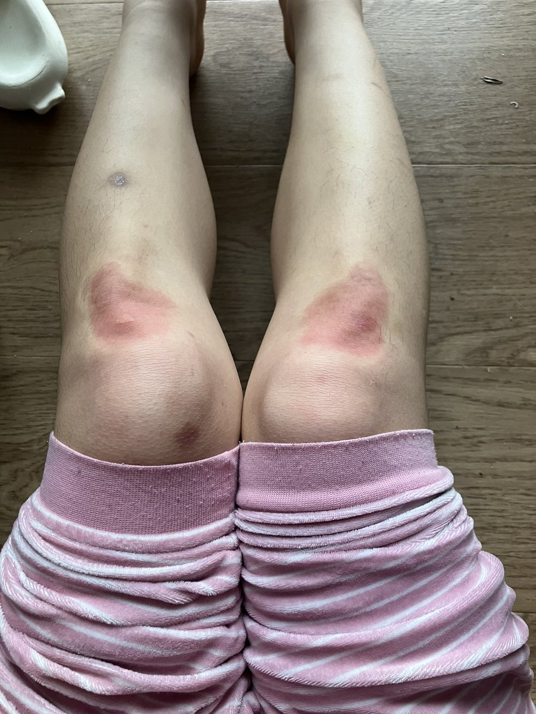

北雁冬翼（simone luxem）🏳️⚧️🏳️🌈🔬
@Simone_Luxem
根据课件自学，把自己睡过去的功课自己补上了，大概…
然后发现自己一身汗，像是水里捞出来一样…
以及一结束就再也维持不了上半身的直立了，直接瘫软掉了…耐力好差…
想缩成球团一会…

北雁冬翼（simone luxem）🏳️⚧️🏳️🌈🔬
@Simone_Luxem
昨天晚上紧张睡不着觉，但是第二天有早课，蹭在妹妹怀里哼唧半天终于说服妹妹保证如果第二天自己上课睡过去了之类的话会胖揍自己一顿…
结果今天醒来发现自己已经在家里把两门课都睡过去了，今天不用上课了…
暴风哭泣…去自己罚跪去了…